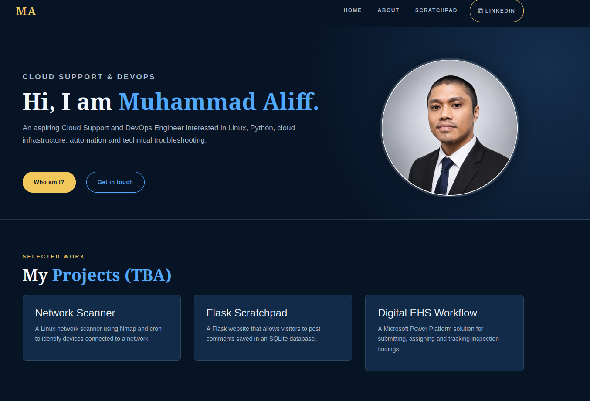
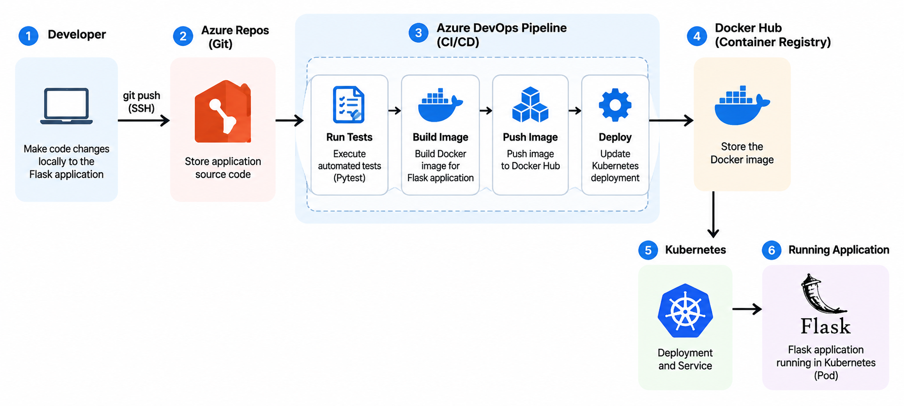
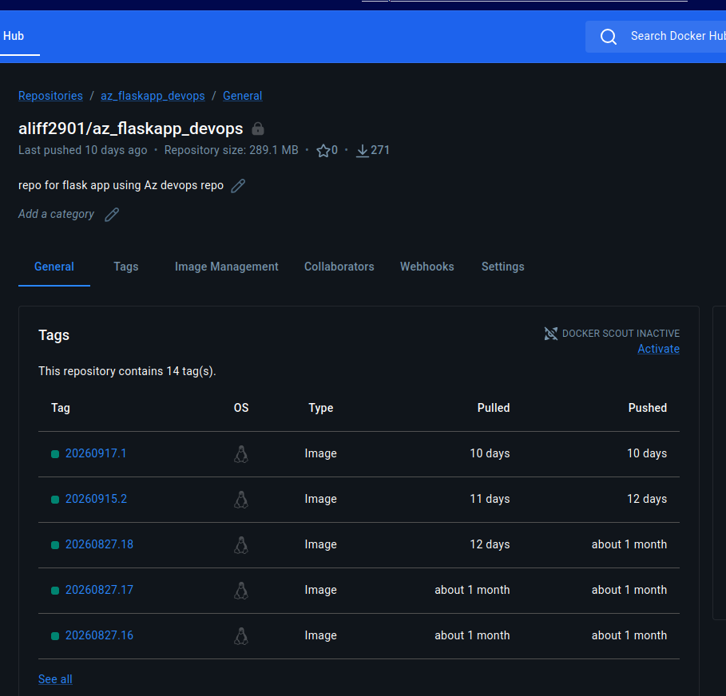
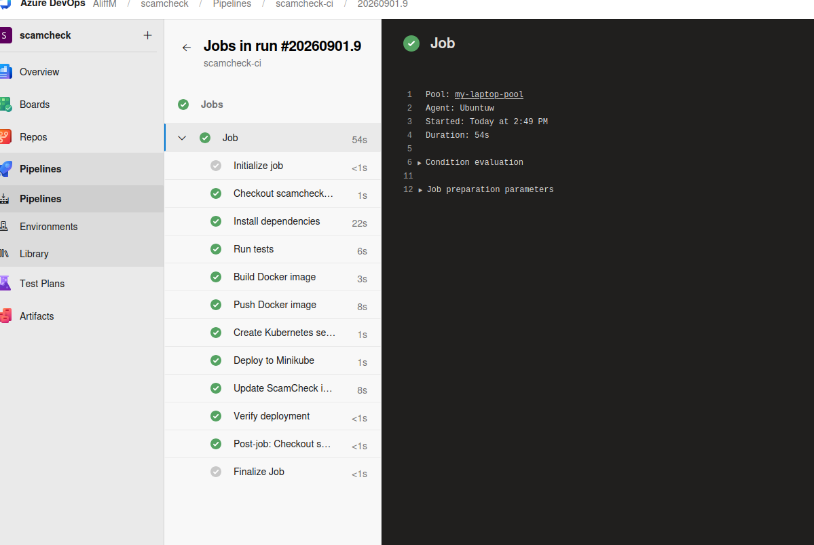

PROJECT 02
Flask CI/CD Deployment
Building an automated deployment workflow that takes a Flask application from source code to a running container in Kubernetes.
OVERVIEW
What I worked on
This project gave me hands-on experience building a complete CI/CD workflow for a Flask web application.
Instead of manually rebuilding and redeploying the application after every change, I worked on automating the process from source control through containerisation and Kubernetes deployment.
The application source code was managed in Azure Repos. I used Docker to package the application into a consistent container image, Azure Pipelines to automate the build and deployment process, and Kubernetes to run and manage the application.
The Flask application used for this project is also available as a live deployment.

WORKFLOW
From code to deployment
The workflow begins when application changes are pushed to Azure Repos.
The Azure DevOps pipeline then runs the automated tests, builds a new Docker image and pushes the image to Docker Hub.
The deployment process updates the Kubernetes workload to use the newly built image.
Push
Code to Azure Repos
Test
Run automated tests
Build
Create Docker image
Push
Store image in Docker Hub
Deploy
Update Kubernetes

SOURCE CONTROL
Managing application code
I created an Azure DevOps project and used Azure Repos for version control of the Flask application.
I pushed the application to Azure Repos through an SSH connection between my local environment and Azure DevOps.
This allowed changes made locally to be tracked through Git and pushed to the remote repository.
The repository then acts as the starting point for the automated CI/CD workflow.
git push
Local Development
Application changes are developed and tested locally.
↓Git + SSH
Changes are committed and securely pushed to the remote repository.
↓Azure Repos
Source code is stored and version controlled in Azure DevOps.
CONTAINERISATION
Packaging with Docker
I containerised the Flask application using Docker so that the application and its dependencies could run in a consistent environment.
The Dockerfile defines how the application image is built, including the base environment, Python dependencies, application files and the command used to start the application.
After the image is successfully built, it is pushed to Docker Hub so that Kubernetes can retrieve and deploy it.
docker build

KUBERNETES
Running the application
I created Kubernetes manifests to define how the containerised Flask application should run.
The Deployment defines the desired application workload and manages the Pods running the Flask container.
I also created a Service manifest. The Service defines a stable network endpoint and directs incoming traffic to the Pods even if individual Pods are replaced.
I verified each Kubernetes component from the command line.
kubectl get deployment
kubectl get pods
kubectl get services

CI/CD
Automating the workflow
I created an Azure DevOps pipeline to automate a deployment process that previously required several manual steps.
When a change is pushed, the pipeline first runs the automated tests.
After the tests pass, a new Docker image is built and pushed to Docker Hub.
The Kubernetes deployment is then updated to use the newly built image.
This creates a repeatable process where application changes move from source control to deployment through the same automated workflow.

DEPLOYMENT
Updating the application
After the new Docker image is pushed to the container registry, the Kubernetes Deployment is updated to use the new image.
Kubernetes manages the application workload according to the Deployment configuration.
The Kubernetes Service provides a consistent network endpoint and directs incoming traffic to the running application Pods.
Finally, I verify the Kubernetes resources and access the running application to confirm that the new version has been successfully deployed.
Docker Hub
Stores the newly built application image.
↓Kubernetes Deployment
Updates the application workload with the new image.
↓Pod
Runs the Flask application container.
↓Service
Provides a stable way to reach the running application.
TROUBLESHOOTING
Learning from failures
An important part of the project was troubleshooting the workflow when individual stages did not behave as expected.
I learnt to investigate the deployment layer by layer instead of immediately assuming that the pipeline itself was the problem.
I checked pipeline output, Docker image creation, Kubernetes Deployments and Pods, and finally the Service used to reach the application.
This helped me understand how problems at different stages of a CI/CD workflow can affect the final deployment.
01 — Pipeline
Check the pipeline logs and failed task.
02 — Docker
Confirm that the container image was built successfully.
03 — Registry
Verify that the expected image is available.
04 — Kubernetes
Check the Deployment and Pod status.
05 — Networking
Verify that the Service can reach the application.
DEMONSTRATION
Presenting the workflow
As part of the bootcamp exercise, I demonstrated the completed workflow to the class.
The demonstration covered the Flask application, containerisation with Docker, the Azure DevOps CI/CD pipeline and the Kubernetes deployment process.
The recording shows my walkthrough of the task and how I explained the implementation during the class presentation.
This also gave me practice explaining technical concepts and demonstrating a working deployment process rather than only implementing it.
Class demonstration of the Flask CI/CD deployment workflow.
REFLECTION
What I learnt
This project made the CI/CD process much clearer to me because I could follow an application change through the complete workflow instead of learning each tool separately.
I gained practical experience using Git for source control, Docker for containerisation, Azure DevOps for automation and Kubernetes for application deployment.
Working through failed builds and deployment issues also improved my troubleshooting approach.
Source Control
Managing application changes using Git and Azure Repos.
Containerisation
Packaging an application consistently using Docker.
Automation
Using Azure Pipelines to automate repeatable deployment tasks.
Orchestration
Understanding how Kubernetes Deployments, Pods and Services work together.
Troubleshooting
Investigating problems across multiple layers of the deployment workflow.